#> # A tibble: 6 × 4
#> country year cases population
#> <chr> <dbl> <dbl> <dbl>
#> 1 Afghanistan 1999 745 19987071
#> 2 Afghanistan 2000 2666 20595360
#> 3 Brazil 1999 37737 172006362
#> 4 Brazil 2000 80488 174504898
#> 5 China 1999 212258 1272915272
#> 6 China 2000 213766 12804285837 Summarizing Data
7.1 Types of Data
Categorical
Subdivide things into groups
- What type?
- Which category?
Numerical
Measure things with numbers
- How many?
- How much?
7.1.0.1 Categorical (discrete) variables:
Nominal
- Order doesn’t matter
- Differ in “name” (nominal) only
e.g. country in TB case data:
Ordinal
- Order matters
- Distance between units not equal
e.g.: Placement 2017 Boston marathon:
#> # A tibble: 6 × 3
#> Placement `Official Time` Name
#> <dbl> <time> <chr>
#> 1 1 02:09:37 Kirui, Geoffrey
#> 2 2 02:09:58 Rupp, Galen
#> 3 3 02:10:28 Osako, Suguru
#> 4 4 02:12:08 Biwott, Shadrack
#> 5 5 02:12:35 Chebet, Wilson
#> 6 6 02:12:45 Abdirahman, Abdi7.1.0.2 Numerical data:
Interval
- Numerical scale with arbitrary starting point
- No “0” point
- Can’t say “x” is double “y”
e.g.: temp in Beaver data
#> day time temp activ
#> 1 346 840 36.33 0
#> 2 346 850 36.34 0
#> 3 346 900 36.35 0
#> 4 346 910 36.42 0
#> 5 346 920 36.55 0
#> 6 346 930 36.69 0Ratio
- Has a “0” point
- Can be described as percentages
- Can say “x” is double “y”
e.g.: height & speed in wildlife impacts
#> # A tibble: 6 × 3
#> incident_date height speed
#> <dttm> <dbl> <dbl>
#> 1 2018-12-31 00:00:00 700 200
#> 2 2018-12-27 00:00:00 600 145
#> 3 2018-12-23 00:00:00 0 130
#> 4 2018-12-22 00:00:00 500 160
#> 5 2018-12-21 00:00:00 100 150
#> 6 2018-12-18 00:00:00 4500 2507.1.1 Key Questions
Categorical
Does this work? Does the order matter?
Yes: Ordinal
No: Nominal
Numerical
Is there a “baseline”?
Yes: Ratio
No: Interval
7.1.2 Variable Encoding
Be careful of how variables are encoded!
When numbers are categories
- “Dummy coding”: e.g.,
passedTest=1or0) - “North”, “South”, “East”, “West” =
1,2,3,4
When ratio data are discrete (i.e. counts)
- Number of eggs in a carton, heart beats per minute, etc.
- Continuous variables measured discretely (e.g. age)
7.1.3 Time
- As ordinal categories: “Jan.”, “Feb.”, “Mar.”, etc.
- As interval scale: “Jan. 1”, “Jan. 2”, “Jan. 3”, etc.
- As ratio scale: “30 sec”, “60 sec”, “70 sec”, etc.
7.2 Summary Measures
Single variables: Centrality & Variability
Two variables: Correlation
7.2.1 Centrality (a.k.a. The “Average” Value)
A single number representing the middle of a set of numbers]
Mean: \(\frac{\text{Sum of values}}{\text{\# of values}}\)
Median: “Middle” value (50% of data above & below)
Mean isn’t always the “best” choice
wildlife_impacts %>%
filter(! is.na(height)) %>%
summarise(
mean = mean(height),
median = median(height)
)#> # A tibble: 1 × 2
#> mean median
#> <dbl> <dbl>
#> 1 984. 50Percent of data below mean:
#> [1] "73.9%"On average, at what height do planes hit birds?
On average, where do planes hit birds? Saying ~1000 ft is misleading. It’s much more likely to be under 100 ft.
Beware the “flaw of averages”
What happened to the statistician that crossed a river with an average depth of 3 feet?
…he drowned

7.2.2 Variability (“Spread”)
Standard deviation: distribution of values relative to the mean \(s = \sqrt{\frac{\sum_{i=1}^{N}(x_i - \bar{x})^2}{N - 1}}\)
Interquartile range (IQR): \(Q_3 - Q_1\) (middle 50% of data)
Range: max - min
Example: Days to ship
Complaints are coming in about orders shipped from warehouse B, so you collect some data:
daysToShip#> order warehouseA warehouseB
#> 1 1 3 1
#> 2 2 3 1
#> 3 3 3 1
#> 4 4 4 3
#> 5 5 4 3
#> 6 6 4 4
#> 7 7 5 5
#> 8 8 5 5
#> 9 9 5 5
#> 10 10 5 6
#> 11 11 5 7
#> 12 12 5 10Here, averages are misleading:
daysToShip %>%
gather(warehouse, days, warehouseA:warehouseB) %>%
group_by(warehouse) %>%
summarise(
mean = mean(days),
median = median(days)
)#> # A tibble: 2 × 3
#> warehouse mean median
#> <chr> <dbl> <dbl>
#> 1 warehouseA 4.25 4.5
#> 2 warehouseB 4.25 4.5Variability reveals difference in days to ship:
daysToShip %>%
gather(warehouse, days, warehouseA:warehouseB) %>%
group_by(warehouse) %>%
summarise(
mean = mean(days),
median = median(days),
range = max(days) - min(days),
sd = sd(days)
)#> # A tibble: 2 × 5
#> warehouse mean median range sd
#> <chr> <dbl> <dbl> <dbl> <dbl>
#> 1 warehouseA 4.25 4.5 2 0.866
#> 2 warehouseB 4.25 4.5 9 2.70Interpreting the standard deviation
\(s = \sqrt{\frac{\sum_{i=1}^{N}(x_i - \bar{x})^2}{N - 1}}\)

Mean & Standard Deviation are sensitive to outliers
Outliers: \(Q_1 - 1.5 IQR\) or \(Q_3 + 1.5 IQR\)
Extreme values: \(Q_1 - 3 IQR\) or \(Q_3 + 3 IQR\)
data1 <- c(3, 3, 4, 5, 5, 6, 6, 7, 8, 9)- Mean: 5.6
- Standard Deviation: 2.01
- Median: 5.5
- IQR: 2.5
data2 <- c(3, 3, 4, 5, 5, 6, 6, 7, 8, 20)- Mean: 6.7
- Standard Deviation: 4.95
- Median: 5.5
- IQR: 2.5
Robust statistics for continuous data (less sensitive to outliers):
Centrality: Use median rather than mean
Variability: Use IQR rather than standard deviation
7.3 Summarizing/Visualizing Data by Type
“Visualizing data helps us think”
One great example of the importance of visualizing data would be Anscombe’s Quartet. Anscombe’s quartet is comprised of the four datasets shown below. Although these four datasets have identical summary statistics, their graphs reveal their varying data points. Similarly, the Datasaurus dataset seems like an ordinary dataset when looking at the summary statistics. However, plotting the dataset reveals a dinosaur. Inspired by the Anscombe’s Quartet and Datasaurus datasets, the Datasaurus Dozon has 12 datasets with identical summary statistics and differing imagery in their graphs.
Anscombe’s Quartet

The Datasaurus and the Datasaurus Dozon
(More here)

7.3.1 The data type determines how to summarize and visualize it.
Nominal
(Categorical)
Measures:
-
Frequency counts /
Proportions
Charts:
- Bars
Ordinal
(Categorical)
Measures:
-
Frequency counts /
Proportions -
Centrality:
Median, Mode - Variability: IQR
Charts:
- Bars
Numerical
(Continuous)
Measures:
-
Centrality:
Mean, median - Variability: Range, standard deviation, IQR
Charts:
- Histogram
- Boxplot
7.3.2 Summarizing Nominal data
Summarize: Counts / percentages
wildlife_impacts %>%
count(operator, sort = TRUE) %>%
mutate(p = n / sum(n))#> # A tibble: 4 × 3
#> operator n p
#> <chr> <int> <dbl>
#> 1 SOUTHWEST AIRLINES 17970 0.315
#> 2 UNITED AIRLINES 15116 0.265
#> 3 AMERICAN AIRLINES 14887 0.261
#> 4 DELTA AIR LINES 9005 0.158Visualize: (usually sorted) Bars
wildlife_impacts %>%
count(operator, sort = TRUE) %>%
ggplot() +
geom_col(
aes(x = n, y = reorder(operator, n)),
width = 0.7
) +
labs(x = "Count", y = "Operator")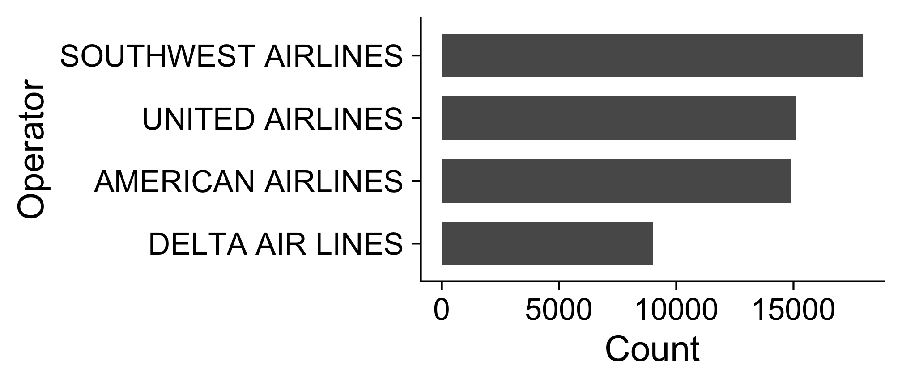
7.3.3 Summarizing Ordinal data
Summarize: Counts / percentages
wildlife_impacts %>%
count(incident_month, sort = TRUE) %>%
mutate(p = n / sum(n))#> # A tibble: 12 × 3
#> incident_month n p
#> <dbl> <int> <dbl>
#> 1 9 7980 0.140
#> 2 10 7754 0.136
#> 3 8 7104 0.125
#> 4 5 6161 0.108
#> 5 7 6133 0.108
#> 6 6 4541 0.0797
#> # ℹ 6 more rowsVisualize: Bars
wildlife_impacts %>%
count(incident_month, sort = TRUE) %>%
ggplot() +
geom_col(
aes(x = as.factor(incident_month), y = n),
width = 0.7
) +
labs(x = "Incident month")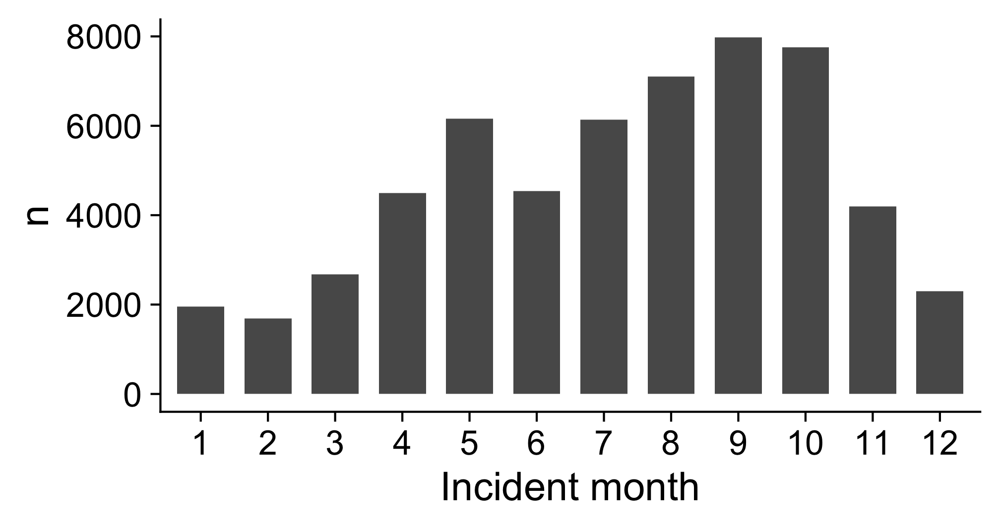
7.3.4 Summarizing Numerical (continuous) variables
Histograms:
- Skewness
- Number of modes
Boxplots:
- Outliers
- Comparing variables
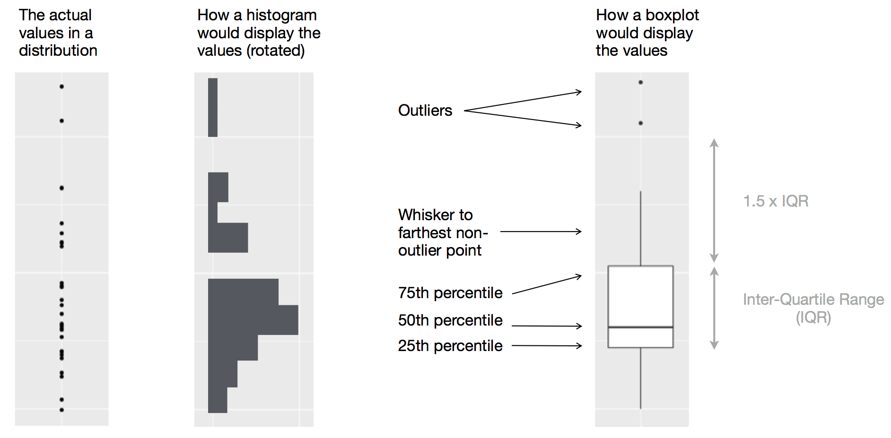
7.3.4.1 Histogram: Identify Skewness & # of Modes
Summarise: Mean, median, sd, range, & IQR:
summary(wildlife_impacts$height)#> Min. 1st Qu. Median Mean 3rd Qu. Max. NA's
#> 0.0 0.0 50.0 983.8 1000.0 25000.0 18038Visualize: Histogram (identify skewness & modes)
Height
ggplot(wildlife_impacts) +
geom_histogram(aes(x = height), bins = 50) +
labs(x = 'Height (ft)', y = 'Count')Speed
ggplot(wildlife_impacts) +
geom_histogram(aes(x = speed), bins = 50) +
labs(x = 'speed (mph)', y = 'Count')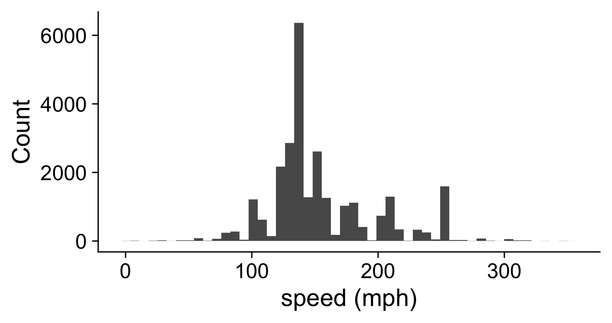
7.3.4.2 Boxplot: Identify outliers
Height
ggplot(wildlife_impacts) +
geom_boxplot(aes(x = height)) +
labs(x = 'Height (ft)', y = NULL)Speed
ggplot(wildlife_impacts) +
geom_boxplot(aes(x = speed)) +
labs(x = 'Speed (mph)', y = NULL)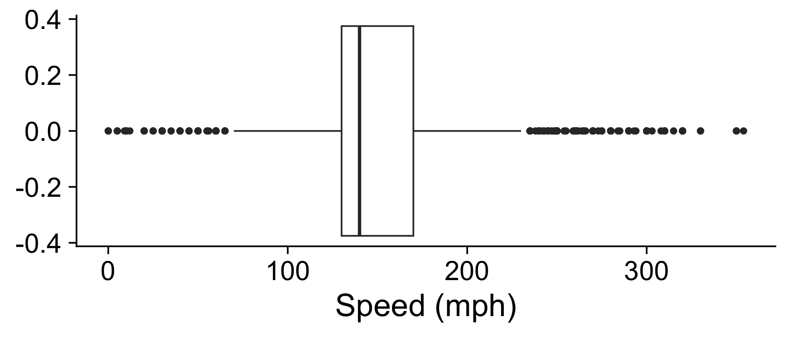
7.4 Visualizing Variation
Ask yourself:
- What type of variation occurs within my variables?
- What type of covariation occurs between my variables?
Check out these guides

7.4.1 Two Categorical Variables
Summarize with a table of counts
wildlife_impacts %>%
count(operator, time_of_day)#> # A tibble: 20 × 3
#> operator time_of_day n
#> <chr> <chr> <int>
#> 1 AMERICAN AIRLINES Dawn 458
#> 2 AMERICAN AIRLINES Day 7809
#> 3 AMERICAN AIRLINES Dusk 584
#> 4 AMERICAN AIRLINES Night 3710
#> 5 AMERICAN AIRLINES <NA> 2326
#> 6 DELTA AIR LINES Dawn 267
#> # ℹ 14 more rowsConvert to “wide” format with pivot_wider() to make it easier to compare values
wildlife_impacts %>%
count(operator, time_of_day) %>%
pivot_wider(names_from = time_of_day, values_from = n)#> # A tibble: 4 × 6
#> operator Dawn Day Dusk Night `NA`
#> <chr> <int> <int> <int> <int> <int>
#> 1 AMERICAN AIRLINES 458 7809 584 3710 2326
#> 2 DELTA AIR LINES 267 4846 353 2090 1449
#> 3 SOUTHWEST AIRLINES 394 9109 599 5425 2443
#> 4 UNITED AIRLINES 151 3359 181 1510 9915Visualize with bars:
map fill to denote 2nd categorical var
wildlife_impacts %>%
count(operator, time_of_day) %>%
ggplot() +
geom_col(
aes(
x = n,
y = reorder(operator, n),
fill = reorder(time_of_day, n)
),
width = 0.7,
position = 'dodge'
) +
theme(legend.position = "bottom") +
labs(
fill = "Time of day",
y = "Airline"
)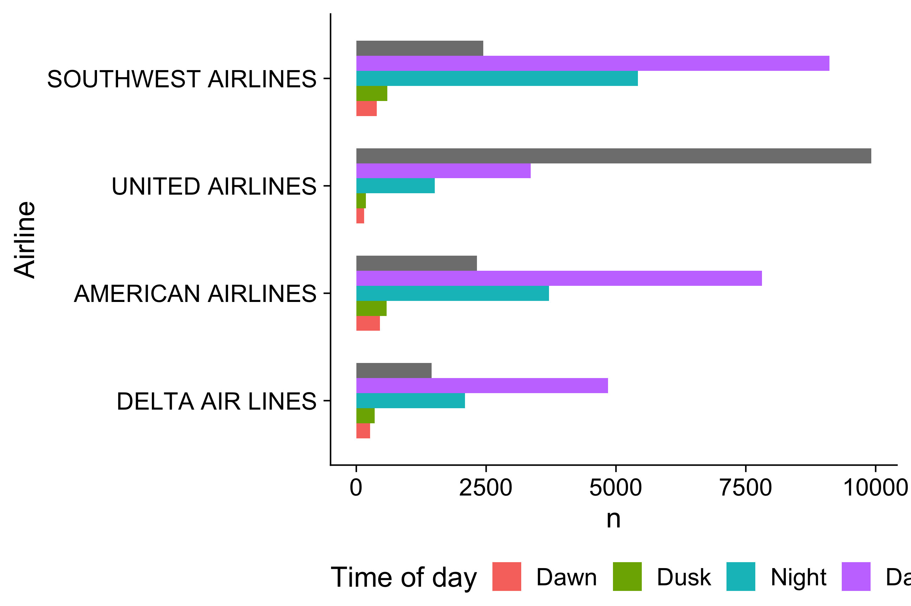
Visualize with scatterplot - looking for clustering and/or correlational relationship
ggplot(wildlife_impacts) +
geom_point(
aes(x = speed, y = height),
size = 0.5
) +
labs(
x = 'Speed (mph)',
y = 'Height (f)'
)7.4.2 One Continuous, One Categorical
Visualize with boxplot
ggplot(wildlife_impacts) +
geom_boxplot(aes(x = speed, y = operator)) +
labs(
x = 'Speed (mph)',
y = 'Airline'
)7.5 Correlation
There are some pretty racist origins in eugenics. This included the notion of being ‘well born’ and possessing ‘superior’ genetics, frequently associated with race. The beautiful irony is that human genetics was also the field that conclusively demonstrated the biological falsity of race. It also advanced our understanding of correlation with the works of these two people:
Sir Francis Galton (1822 - 1911)
- Charles Darwin’s cousin.
- “Father” of eugenics.
- Interested in heredity.

Karl Pearson (1857 - 1936)
- Galton’s (hero-worshiping) protégé.
- Defined correlation equation.
- “Father” of mathematical statistics.
Galton’s family data
Galton, F. (1886). “Regression towards mediocrity in hereditary stature”. The Journal of the Anthropological Institute of Great Britain and Ireland 15: 246-263.
Galton’s question: Does marriage selection indicate a relationship between the heights of husbands and wives?
(He called this “assortative mating”)
“midparent height” is just a scaled mean:
midparentHeight = (father + 1.08*mother)/2library(HistData)
galtonScatterplot <- GaltonFamilies %>%
ggplot() +
geom_point(
aes(x = midparentHeight, y = childHeight),
size = 0.5, alpha = 0.7
) +
theme_classic() +
labs(
x = 'Midparent height (inches)',
y = 'Child height (inches)'
)
galtonScatterplot
7.5.1 How do you measure correlation? (Pearson)
Pearson came up with this:
7.5.1.0.1 \(r = \frac{\text{Cov}(x, y)}{\text{sd}(x) * \text{sd}(y)}\)
Assumptions:
1. Variables must be interval or ratio
2. Linear relationship
7.5.2 How do you interpret \(r\)?
7.5.2.0.1 \(r = \frac{\text{Cov}(x, y)}{\text{sd}(x) * \text{sd}(y)}\)
Interpretation: - \(-1 \le r \le 1\) - Closer to 1 is stronger correlation - Closer to 0 is weaker correlation
cor(
x = GaltonFamilies$midparentHeight,
y = GaltonFamilies$childHeight,
method = 'pearson'
)#> [1] 0.3209499
7.5.3 What does \(r\) mean?
- \(\pm 0.1 - 0.3\): Weak
- \(\pm 0.3 - 0.5\): Moderate
- \(\pm 0.5 - 0.8\): Strong
- \(\pm 0.8 - 1.0\): Very strong
Test your understanding of \(r\) here: guessthecorrelation.com
Coefficient of determination: \(r^2\) Percent of variance in one variable that is explained by the other variable
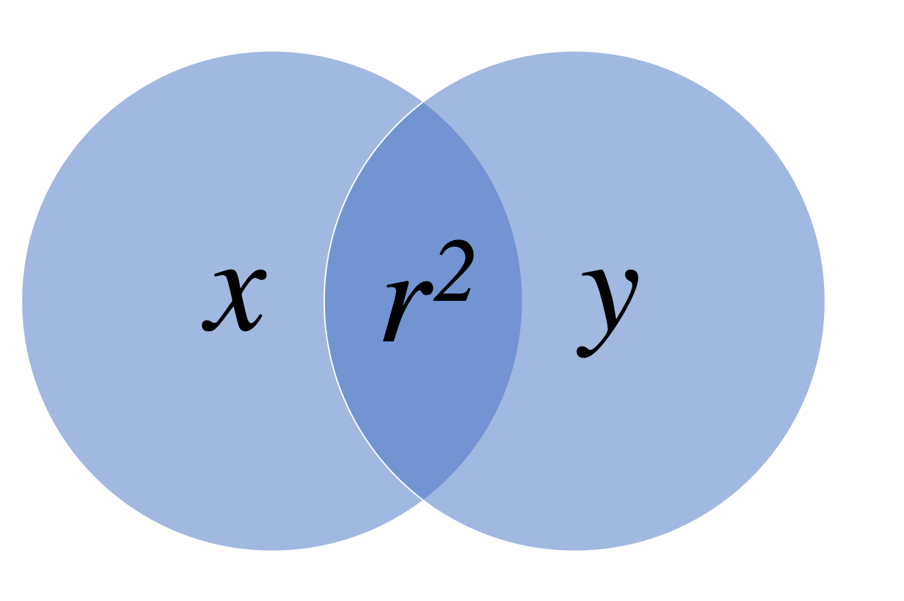
| \(r\) | \(r^2\) |
|---|---|
| 0.1 | 0.01 |
| 0.2 | 0.04 |
| 0.3 | 0.09 |
| 0.4 | 0.16 |
| 0.5 | 0.25 |
| 0.6 | 0.36 |
| 0.7 | 0.49 |
| 0.8 | 0.64 |
| 0.9 | 0.81 |
| 1.0 | 1.00 |
You should report both \(r\) and \(r^2\) If correlation between parent and child height is 0.32, then 10% of the variance in the child height is explained by the parent height.
7.5.4 Correlation != Causation
X causes Y
- Training causes improved performance
Y causes X
- Good (bad) performance causes people to train harder (less hard).
–
Z causes both X & Y
- Commitment and motivation cause increased training and better performance.
Be weary of dual axes!
(They can cause spurious correlations)
Dual Axes:
Single Axis: 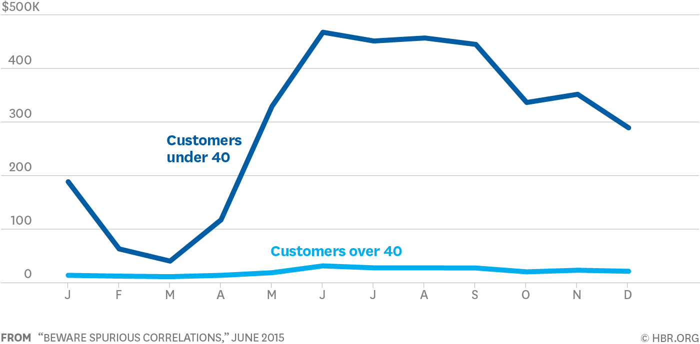
7.5.5 Outliers

Pearson correlation is highly sensitive to outliers
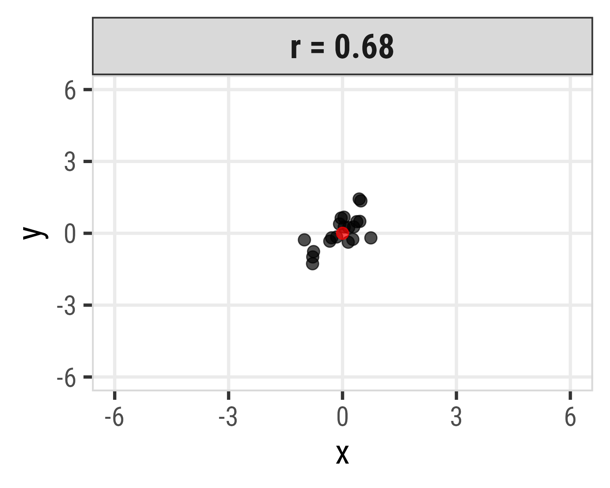
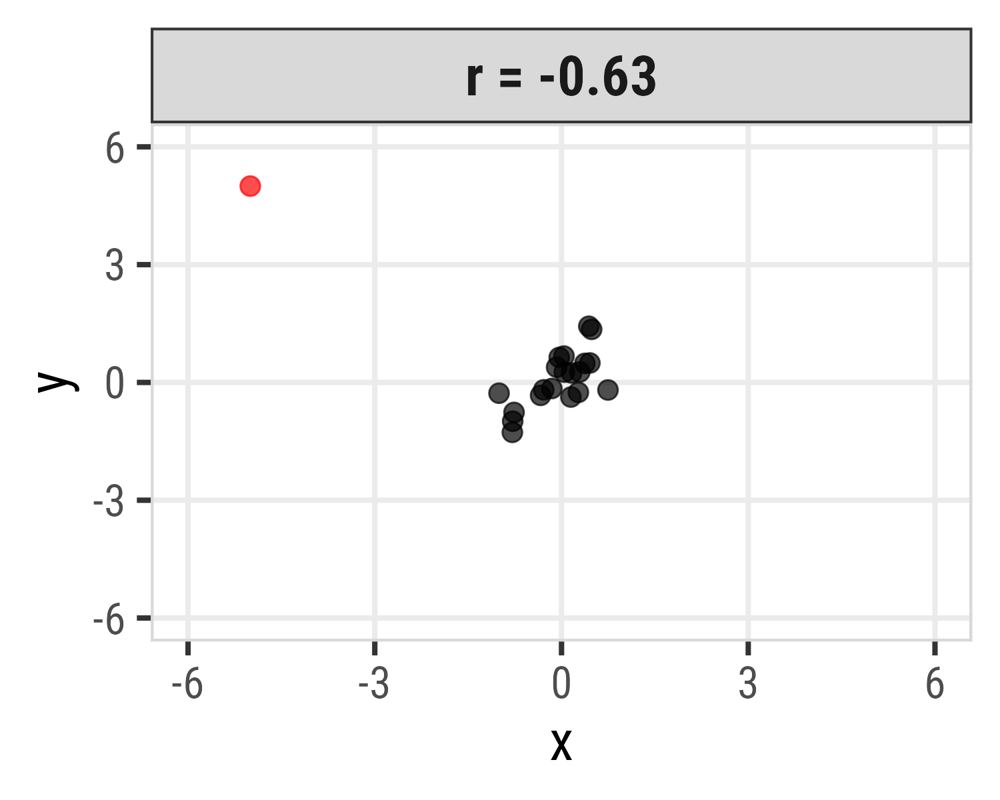
7.5.6 Spearman’s rank-order correlation
7.5.6.1 \(r = \frac{\text{Cov}(x, y)}{\text{sd}(x) * \text{sd}(y)}\)
- Separately rank the values of X & Y.
- Use Pearson’s correlation on the ranks instead of the \(x\) & \(y\) values.
Assumptions:
- Variables can be ordinal, interval or ratio
- Relationship must be monotonic (i.e. does not require linearity)
Spearman correlation more robust to outliers
| Pearson | Spearman |
|---|---|
| -0.56 | 0.53 |
| 0.39 | 0.69 |
| 0.94 | 0.81 |
| 0.38 | 0.76 |
| 0.81 | 0.79 |
| 0.31 | 0.70 |
| 0.95 | 0.81 |
| 0.51 | 0.75 |
| -0.56 | 0.53 |
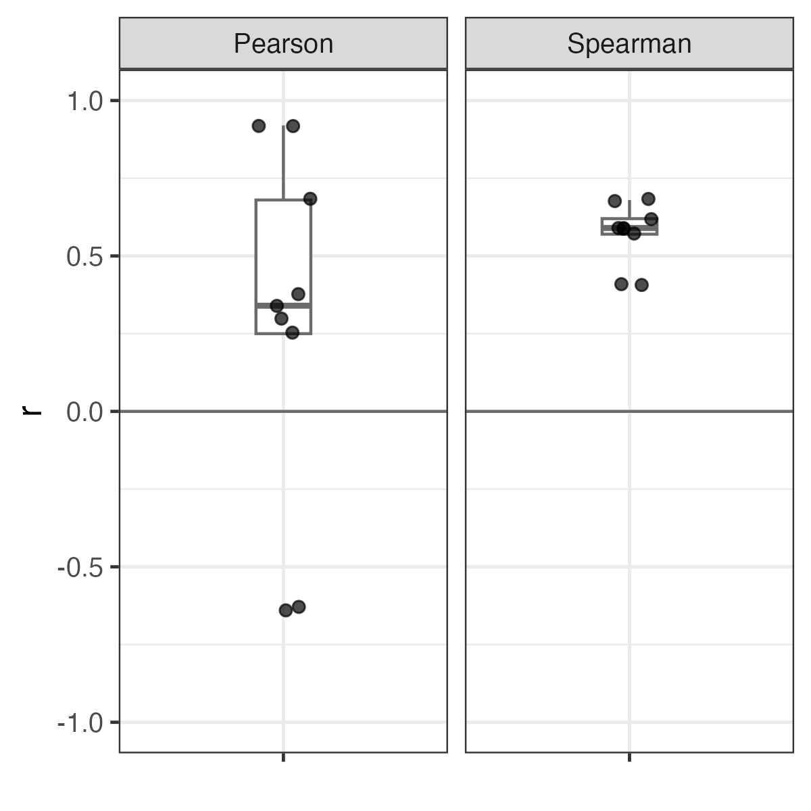
7.5.7 Summary of correlation
- Pearson’s correlation: Described the strength of a linear relationship between two variables that are interval or ratio in nature.
- Spearman’s rank-order correlation: Describes the strength of a monotonic relationship between two variables that are ordinal, interval, or ratio. It is more robust to outliers.
- The coefficient of determination ( \(r^2\) ) describes the amount of variance in one variable that is explained by the other variable.
- Correlation != Causation
R command (hint: add use = "complete.obs" to drop NA values)
pearson <- cor(x, y, method = "pearson", use = "complete.obs")
spearman <- cor(x, y, method = "spearman", use = "complete.obs")7.5.8 Scatterplots: The correlation workhorse
scatterplot <- mtcars %>%
ggplot() +
geom_point(
aes(x = mpg, y = hp),
size = 2, alpha = 0.7
) +
theme_classic(base_size = 20) +
labs(
x = 'Fuel economy (mpg)',
y = 'Engine power (hp)'
)
scatterplot7.5.9 Adding a correlation label to a chart
Make the correlation label
corr <- cor(mtcars$mpg, mtcars$hp, method = 'pearson')
corrLabel <- paste('r = ', round(corr, 2))Add label to the chart with annotate()
scatterplot +
annotate(
geom = 'text',
x = 25, y = 310,
label = corrLabel,
hjust = 0, size = 7
)7.5.10 Visualize all the correlations: ggcorr()

library('GGally')mtcars %>%
ggcorr()library('GGally')mtcars %>%
ggcorr(
label = TRUE,
label_size = 3,
label_round = 2
)
ggcor_mtcars_final <- mtcars %>%
ggcorr(
label = TRUE,
label_size = 3,
label_round = 2,
label_color = 'white',
nbreaks = 5,
palette = "RdBu"
)Pearson
mtcars %>%
ggcorr(
label = TRUE,
label_size = 3,
label_round = 2,
method = c("pairwise", "pearson")
)Spearman
mtcars %>%
ggcorr(
label = TRUE,
label_size = 3,
label_round = 2,
method = c("pairwise", "spearman")
)7.5.11 Correlograms: ggpairs()
library('GGally')mtcars %>%
select(mpg, cyl, disp, hp, wt) %>%
ggpairs()- Look for linear relationships
- View distribution of each variable
7.5.12 Simpson’s Paradox: when correlation betrays you
At first glance, it seems that body mass and bill depth are negatively correlated. However, if we measure the correlation by species, we find that body mass and bill depth are positively correlated.
Body mass vs. Bill depth
Body mass vs. Bill depth